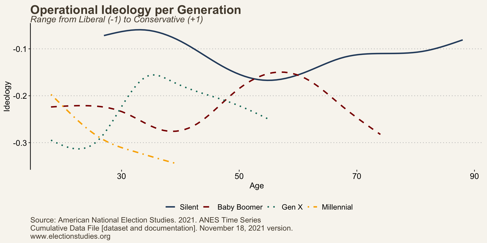

For those seeking to understand the idiosyncrasies of young voters, ideology becomes an irresistible topic. Most Millennials have likely heard their parents tell them that they too will shed their liberal skin in favor of a conservative one. While conventional wisdom posits that individuals become more conservative as they age, the impact of aging on political ideology remains inconclusive. Despite this uncertainty, this aphorism remains a pervasive cultural narrative.
What is Ideology?
Ideology is a complex and contentious term. It serves as a language through which politicians and citizens discuss and make sense of their political realities. Both groups have conversations about who is too liberal or not liberal enough and politicians may even endorse judges running in non-partisan elections all due to their shared ideology.
Consider ideology as a structure of attitudes and beliefs. These attitudes often encompass facets of life such as religion, economics, education, and the relationship between matters that are usually deemed apolitical. There are clusters of attitudes that are related, which implies an ordering of attitudes. Thus, as one attitude changes, so does another. In other words, ideology can be considered to be a hierarchy of beliefs where some beliefs serve as a foundation for others (Campbell et al. 1960).
This towering structure of attitudes is dualistic, reflecting both individual and collective dimensions. Individuals construct their own interpretations of the term, imbuing it with their own meanings and connotations. Although individual preferences are used to formulate one’s ideology, those preferences accommodate beliefs and attitudes from external sources. For example, party leaders are often held as the arbiters of their party’s respective ideology. Republicans have long held Ronald Reagan as the standard for conservative thought, and Democrats deferred to Barack Obama to define liberalism. At the individual level, intimate relationships, such as parent-child and spousal kinship influence the development and transformation of one’s attitudinal structure (Jennings, Stoker, and Bowers 2009; Kaufmann and Petrocik 1999; Stoker and Jennings 1989).
In summary, ideology can be likened to a tower of interconnected beliefs and attitudes, formed through one’s internal interpretations and external influences.
How is Ideology Measured?
One of the challenges in studying the extent to which individuals subscribe to a particular ideology is distinguishing between its psychological and practical components. For example, identifying as a conservative does not require acting in accordance with conservative principles. Indeed, Ellis and Stimson (2012) have identified the presence of what they termed conflicted-conservatives.
These voters hold conservative attitudes on some issues but not all. Ellis and Stimson measured these attitudes across social and economic dimensions, meaning conflicted-conservatives may hold socially conservative or economically conservative attitudes, but not both. These authors report that 80% of self identified conservatives are conflicted-conservatives.
Therefore, two measurements of ideology are common. The first is self-identification—how individuals personally categorize their political leanings. The second measurement consists of combining several policy preferences to formulate a score that reflects the individual’s position on the ideological spectrum. These two measurements are referred to as ‘Symbolic’ (self-reported) and ‘Operational’ (aggregate of policy positions) ideology.
As we’ll see below, individuals often adopt conflicting beliefs.
Ideology Across Generations
The data I use here is gathered by the American National Election Study (ANES) which conducts national surveys annually. The symbolic ideology measurement is captured by asking respondents to place themselves on a scale from 1 (Extremely Liberal) to 7 (Extremely Conservative). I collapse this measurement so that -1 indicates extremely liberal, 1 indicates extremely conservative, and 0 represents moderate. Symbolic ideology is reported in the graph below.
Before assessing the graphs, there are two notes to be aware of. First, these graphs don’t track the aging process of individuals over time. Instead, they present average scores for each age group. For example, the average score of a 30-year-old Baby Boomer is the mean of all 30-year-old Boomers questioned between the years 1976 and 1994, as these are the first and last years any Boomer was the age of 30.
Second, it’s worth highlighting the overall similarity in the averages across generations. The average for each generation ranges from -0.1 to 0.2 on a scale spanning from -1 to 1. However, the purpose here is to identify key differences between each generation, specifically how each age group within the generations identifies.
The three generations preceding the Millennial generation all exhibit an increasing conservative preference within older cohorts. The Silent and Baby Boom generations follow a plateau effect between the ages of 45 and 55. The Baby Boom generation reports a slight decline in conservative identity as these respondents approach retirement. This shift could be linked to increasing dependency on social programs like Social Security and Medicare.
A notable outlier in these findings is the Millennial generation, whose average remains constant across age cohorts. This consistency holds true for both genders and across racial backgrounds. Predictably, female and non-white respondents report to be more liberal than their male and white counterparts. Still, Millennials as a whole exhibit a slightly left-of-center identity and seem to maintain this position consistently.


When we define ideology based on policy preferences, we observe distinct identity formations. In operational terms, Americans tend to align left of center. This means that, on average, across different generations, Americans hold policy preferences that are more liberal than their self-identified political labels.
Furthermore, an interesting trend has emerged among the generations. Millennials stand out as the only generation that hasn’t shifted towards conservative policy preferences over time. While preceding generations show some oscillation between liberal and conservative positions, Millennials have, by and large, maintained a consistently liberal stance on policy issues. This suggests a unique and enduring ideological identity among Millennials.

Throughout history, the pendulum of voter ideology has often swung back and forth between left and right, reflecting changing political preferences. However, when we look at Millennials, it seems they have removed this pendulum entirely, opting for a more consistently liberal stance. In older generations, race and gender often contributed to determining whether a voter leaned liberal or conservative. However, for Millennials, these factors seem to answer a different question—not whether someone is liberal or conservative, but rather, how liberal they are.


These findings provide interesting questions about the future relevancy of the Republican party. As the Republican base continues to age well into retirement, can the GOP expect a healthy level of generational replacement? Millennials have proven their commitment to liberalism, bucking a multigenerational trend where conservative leaders could afford to wait for liberal voters to transition into conservative ones. Perhaps now is the time for the Republican party to engage in a period of introspection and critically evaluate its long-term strategy.
References
Campbell, Angus, Philip E. Converse, Warren E. Miller, and Donald E. Stokes. 1960. The American Voter. University of Chicago Press.
Ellis, Christopher, and James A. Stimson. 2012. Ideolog in America. Cambridge University Press.
Jennings, M. Kent, Laura Stoker, and Jake Bowers. 2009. “Politics Across Generations: Family Transmission Reexamined.” The Journal of Politics 71 (3): 782–99.
Kaufmann, Karen M., and John R. Petrocik. 1999. “The Changing Politics of Men: Understanding the Sources of the Gender Gap.” American Journal of Political Science 43: 864–87.
Stoker, Laura, and M. Kent Jennings. 1989. “Life-Cycle Transitions and Political Participation: The Case of Marriage.” The American Political Science Review 89: 421–33.
Citation
BibTeX citation:
@online{mcculloch2023,
author = {McCulloch, Alexandar},
title = {Millennials: {Steadfast} {Liberals}},
date = {2023-09-09},
url = {https://alex-mcculloch.github.io/posts/2023-09-09-Millennials/},
langid = {en}
}
For attribution, please cite this work as:
McCulloch, Alexandar. 2023. “Millennials: Steadfast
Liberals.” September 9, 2023. https://alex-mcculloch.github.io/posts/2023-09-09-Millennials/.